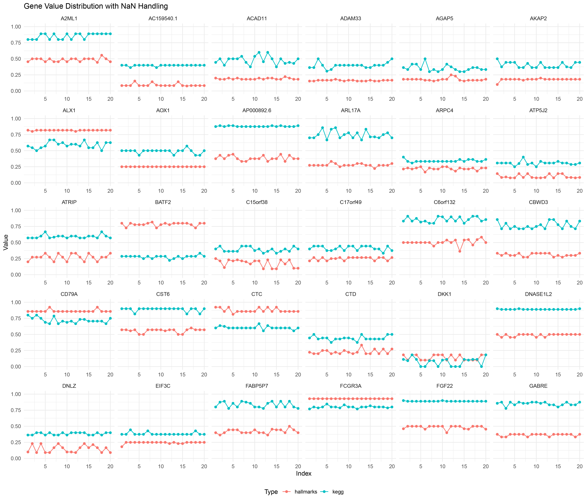
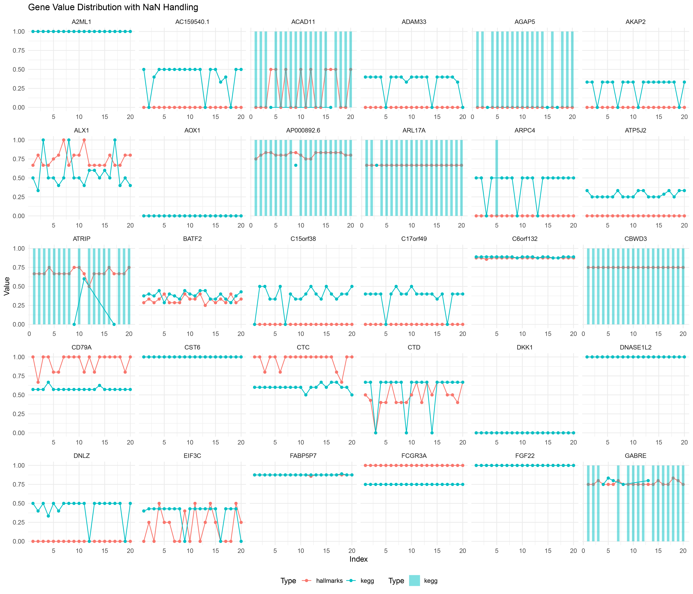
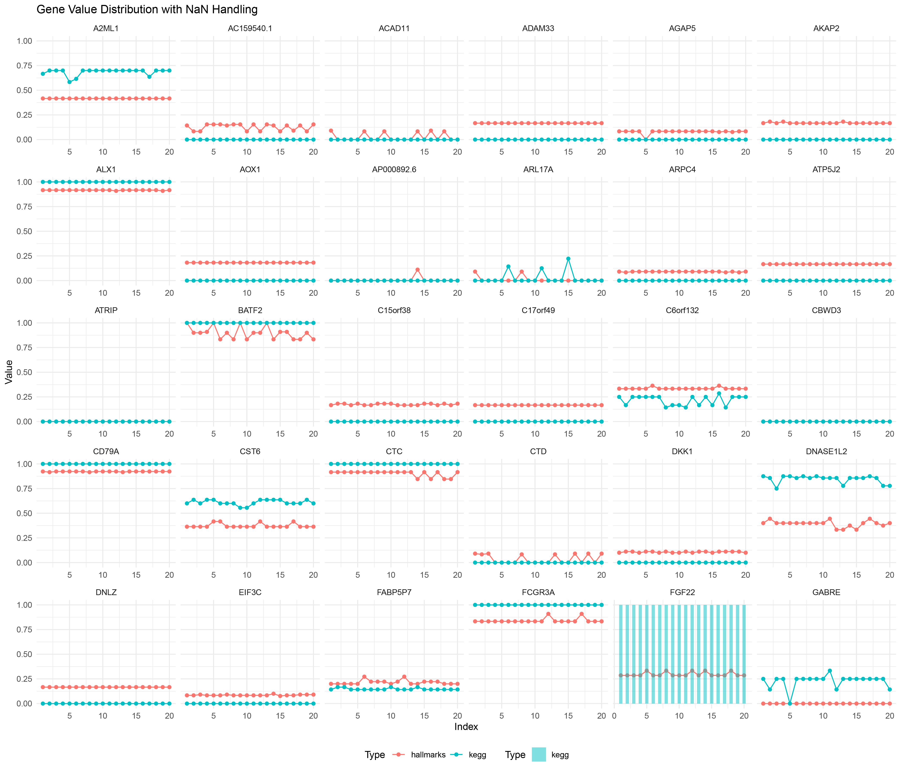
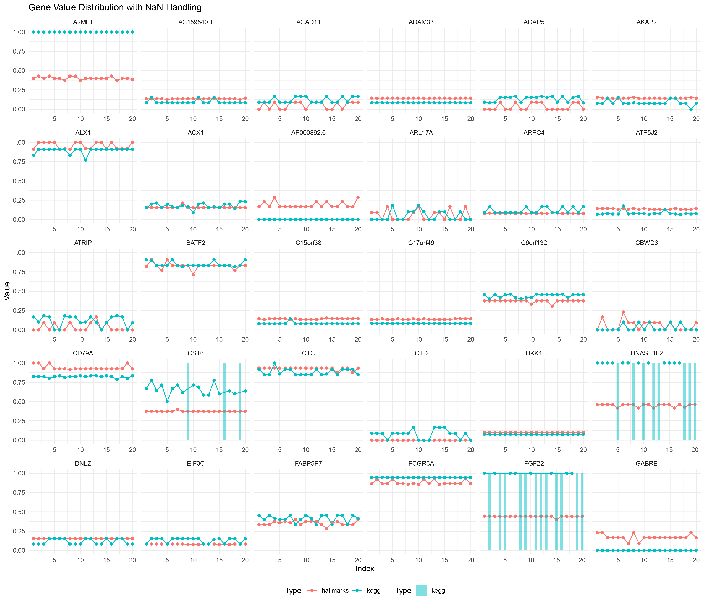
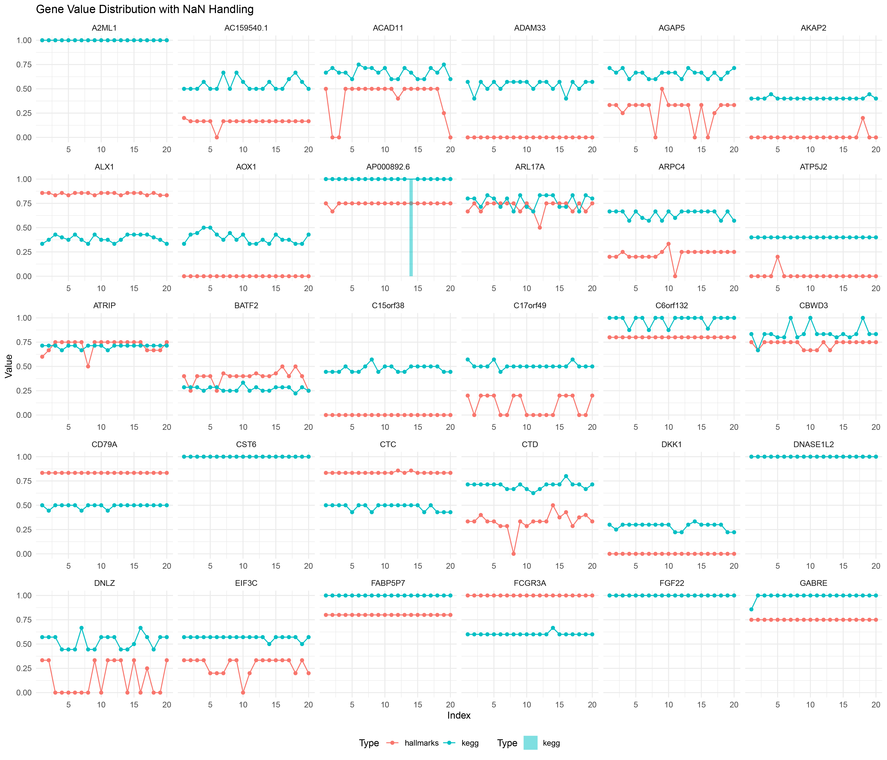
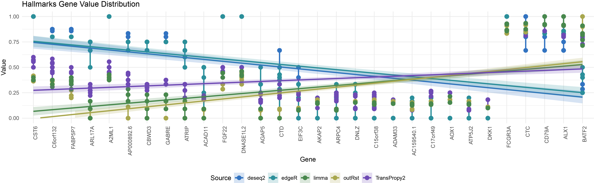
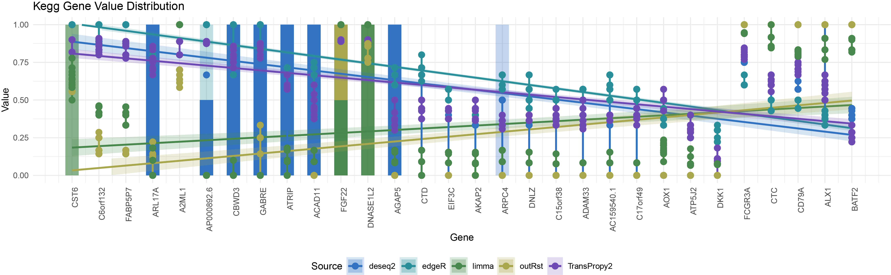

16 All gene line bar
16.1 dataset and function
# dataset
datasets <- list("TransPropy" = TransPropy, "deseq2" = deseq2, "edgeR" = edgeR, "limma" = limma, "outRst" = outRst)
data_names <- names(datasets)
genes <- c("CST6", "C6orf132", "FABP5P7", "ARL17A", "A2ML1",
"AP000892.6", "CBWD3", "GABRE", "ATRIP", "ACAD11",
"FGF22", "DNASE1L2", "AGAP5", "CTD_2231E14.8", "EIF3C",
"AKAP2", "ARPC4_TTLL3", "DNLZ", "C15orf38_AP3S2", "ADAM33",
"AC159540.1", "C17orf49", "AOX1", "ATP5J2_PTCD1", "DKK1",
"FCGR3A", "CTC_231O11.1", "CD79A", "ALX1", "BATF2")
# function
process_data <- function(data_name, data) {
colnames(data) <- gsub("-", "_", colnames(data))
result_dir <- paste0(data_name, "_result_all")
if (!dir.exists(result_dir)) {
dir.create(result_dir)
}
all_correlation_results <- list()
all_count_data <- list()
all_hallmarks_count_data <- list()
all_kegg_count_data <- list()
positive_negative_ratio_list <- list()
for (gene in genes) {
correlation <- data.frame()
genelist <- colnames(data)
genedata <- as.numeric(data[, gene])
for (i in 1:length(genelist)) {
dd <- cor.test(genedata, as.numeric(data[, i]), method = "spearman")
correlation[i, 1] <- gene
correlation[i, 2] <- genelist[i]
correlation[i, 3] <- dd$estimate
correlation[i, 4] <- dd$p.value
}
colnames(correlation) <- c("gene1", "gene2", "cor", "p.value")
correlation <- na.omit(correlation)
all_correlation_results[[gene]] <- correlation
total_positive <- sum(correlation$cor > 0)
total_negative <- sum(correlation$cor < 0)
positive_above_0_5 <- sum(correlation$cor > 0.5)
negative_below_minus_0_5 <- sum(correlation$cor < -0.5)
ratio_all_cor_positive <- total_positive / (total_positive + total_negative)
ratio_all_cor_negative <- total_negative / (total_positive + total_negative)
ratio_abs_cor_positive <- positive_above_0_5 / (positive_above_0_5 + negative_below_minus_0_5)
ratio_abs_cor_negative <- negative_below_minus_0_5 / (positive_above_0_5 + negative_below_minus_0_5)
count_data <- tribble(
~Methods, ~PositiveRatio, ~NegativeRatio,
"AllCor", total_positive, total_negative,
"Abs(Cor)>0.5", positive_above_0_5, negative_below_minus_0_5,
"ratio_AllCor", ratio_all_cor_positive, ratio_all_cor_negative,
"ratio_Abs(Cor)>0.5", ratio_abs_cor_positive, ratio_abs_cor_negative
)
all_count_data[[gene]] <- count_data
geneList <- correlation$cor
names(geneList) <- correlation$gene2
geneList <- sort(geneList, decreasing = TRUE)
for (repeat_num in 1:20) {
hallmarks <- read.gmt("h.all.v7.4.symbols.gmt")
hallmarks_y <- GSEA(geneList, TERM2GENE = hallmarks, pvalueCutoff = 0.05)
sorted_df <- hallmarks_y@result %>% arrange(desc(NES))
sorted_df$core_gene_count <- sapply(strsplit(as.character(sorted_df$core_enrichment), "/"), length)
process_string <- function(s) {
s <- sub("^HALLMARK_", "", s)
words <- unlist(strsplit(s, "_"))
words <- tolower(words)
words <- paste(toupper(substring(words, 1, 1)), substring(words, 2), sep = "")
result <- paste(words, collapse = " ")
return(result)
}
sorted_df$ID <- sapply(sorted_df$ID, process_string)
sorted_df$Description <- sapply(sorted_df$Description, process_string)
rownames(sorted_df) <- sapply(rownames(sorted_df), process_string)
hallmarks_y@result <- sorted_df
gene_set_names <- names(hallmarks_y@geneSets)
new_gene_set_names <- sapply(gene_set_names, process_string)
names(hallmarks_y@geneSets) <- new_gene_set_names
saveRDS(hallmarks_y, paste0(result_dir, "/", data_name, "_", gene, "_hallmarks_y_", repeat_num, ".rds"))
NES_values <- hallmarks_y@result[ , "NES"]
positive_count <- sum(NES_values > 0)
negative_count <- sum(NES_values < 0)
hallmarks_count_data <- tribble(
~Methods, ~PositiveRatio, ~NegativeRatio,
"hallmarks_NES", positive_count, negative_count
)
all_hallmarks_count_data[[paste0(gene, "_hallmarks_", repeat_num)]] <- hallmarks_count_data
positive_negative_ratio <- positive_count / (negative_count + positive_count)
positive_negative_ratio_list[[paste0(gene, "_hallmarks_", repeat_num)]] <- positive_negative_ratio
hallmarks <- read.gmt("c2.cp.kegg.v7.4.symbols.gmt")
kegg_y <- GSEA(geneList, TERM2GENE = hallmarks)
sorted_df <- kegg_y@result %>% arrange(desc(NES))
sorted_df$core_gene_count <- sapply(strsplit(as.character(sorted_df$core_enrichment), "/"), length)
sorted_df$ID <- sapply(sorted_df$ID, process_string)
sorted_df$Description <- sapply(sorted_df$Description, process_string)
rownames(sorted_df) <- sapply(rownames(sorted_df), process_string)
kegg_y@result <- sorted_df
gene_set_names <- names(kegg_y@geneSets)
new_gene_set_names <- sapply(gene_set_names, process_string)
names(kegg_y@geneSets) <- new_gene_set_names
saveRDS(kegg_y, paste0(result_dir, "/", data_name, "_", gene, "_kegg_y_", repeat_num, ".rds"))
NES_values <- kegg_y@result[ , "NES"]
positive_count <- sum(NES_values > 0)
negative_count <- sum(NES_values < 0)
kegg_count_data <- tribble(
~Methods, ~PositiveRatio, ~NegativeRatio,
"kegg_NES", positive_count, negative_count
)
all_kegg_count_data[[paste0(gene, "_kegg_", repeat_num)]] <- kegg_count_data
positive_negative_ratio <- positive_count / (negative_count + positive_count)
positive_negative_ratio_list[[paste0(gene, "_kegg_", repeat_num)]] <- positive_negative_ratio
}
}
saveRDS(all_correlation_results, paste0(result_dir, "/", data_name, "_all_correlation_results.rds"))
saveRDS(all_count_data, paste0(result_dir, "/", data_name, "_all_count_data.rds"))
saveRDS(all_hallmarks_count_data, paste0(result_dir, "/", data_name, "_all_hallmarks_count_data.rds"))
saveRDS(all_kegg_count_data, paste0(result_dir, "/", data_name, "_all_kegg_count_data.rds"))
saveRDS(positive_negative_ratio_list, paste0(result_dir, "/", data_name, "_positive_negative_ratio_list.rds"))
}
# run function
for (data_name in data_names) {
process_data(data_name, datasets[[data_name]])
}
16.2 load data
deseq2_positive_negative_ratio_list <- readRDS(paste0('deseq2_result_all', "/", "deseq2", "_positive_negative_ratio_list.rds"))
TransPropy2_positive_negative_ratio_list <- readRDS(paste0('TransPropy_result_all', "/", "TransPropy", "_positive_negative_ratio_list.rds"))
edgeR_positive_negative_ratio_list <- readRDS(paste0('edgeR_result_all', "/", "edgeR", "_positive_negative_ratio_list.rds"))
limma_positive_negative_ratio_list <- readRDS(paste0('limma_result_all', "/", "limma", "_positive_negative_ratio_list.rds"))
outRst_positive_negative_ratio_list <- readRDS(paste0('outRst_result_all', "/", "outRst", "_positive_negative_ratio_list.rds"))16.3 TransPropy
# Convert list to dataframe
TransPropy2_positive_negative_ratio_list_data <- data.frame(
Gene_Type = names(TransPropy2_positive_negative_ratio_list),
Value = unlist(TransPropy2_positive_negative_ratio_list)
)
# Process data using the mutate function
TransPropy2_positive_negative_ratio_list_data <- TransPropy2_positive_negative_ratio_list_data %>%
mutate(Gene = sub("_.*", "", Gene_Type),
Type = sub(".*_(.*)_.*", "\\1", Gene_Type),
Index = as.numeric(sub(".*_", "", Gene_Type)))
# View the organized data
head(TransPropy2_positive_negative_ratio_list_data)
# Plotting
ggplot() +
# Plot line chart, ignoring NaN values
geom_line(data = TransPropy2_positive_negative_ratio_list_data %>% filter(!is.na(Value)),
aes(x = Index, y = Value, color = Type, group = interaction(Gene, Type))) +
geom_point(data = TransPropy2_positive_negative_ratio_list_data %>% filter(!is.na(Value)),
aes(x = Index, y = Value, color = Type, group = interaction(Gene, Type))) +
# Plot a bar chart for NaN values
geom_bar(data = TransPropy2_positive_negative_ratio_list_data %>% filter(is.na(Value)),
aes(x = Index, y = 1, fill = Type), stat = "identity", alpha = 0.5, width = 0.5) +
scale_fill_manual(values = c("hallmarks" = "#F8766D", "kegg" = "#00BFC4")) + # Manually set fill colors
facet_wrap(~ Gene, scales = "free_x") +
labs(title = "Gene Value Distribution with NaN Handling",
x = "Index",
y = "Value") +
ylim(0, 1) + # Set Y-axis range from 0 to 1
theme_minimal() +
theme(legend.position = "bottom")
Transpropy
16.4 deseq2
deseq2_positive_negative_ratio_list_data <- data.frame(
Gene_Type = names(deseq2_positive_negative_ratio_list),
Value = unlist(deseq2_positive_negative_ratio_list)
)
deseq2_positive_negative_ratio_list_data <- deseq2_positive_negative_ratio_list_data %>%
mutate(Gene = sub("_.*", "", Gene_Type),
Type = sub(".*_(.*)_.*", "\\1", Gene_Type),
Index = as.numeric(sub(".*_", "", Gene_Type)))
head(deseq2_positive_negative_ratio_list_data)
ggplot() +
geom_line(data = deseq2_positive_negative_ratio_list_data %>% filter(!is.na(Value)),
aes(x = Index, y = Value, color = Type, group = interaction(Gene, Type))) +
geom_point(data = deseq2_positive_negative_ratio_list_data %>% filter(!is.na(Value)),
aes(x = Index, y = Value, color = Type, group = interaction(Gene, Type))) +
geom_bar(data = deseq2_positive_negative_ratio_list_data %>% filter(is.na(Value)),
aes(x = Index, y = 1, fill = Type), stat = "identity", alpha = 0.5, width = 0.5) +
scale_fill_manual(values = c("hallmarks" = "#F8766D", "kegg" = "#00BFC4")) +
facet_wrap(~ Gene, scales = "free_x") +
labs(title = "Gene Value Distribution with NaN Handling",
x = "Index",
y = "Value") +
theme_minimal() +
theme(legend.position = "bottom")
deseq2
16.5 outRst
outRst_positive_negative_ratio_list_data <- data.frame(
Gene_Type = names(outRst_positive_negative_ratio_list),
Value = unlist(outRst_positive_negative_ratio_list)
)
outRst_positive_negative_ratio_list_data <- outRst_positive_negative_ratio_list_data %>%
mutate(Gene = sub("_.*", "", Gene_Type),
Type = sub(".*_(.*)_.*", "\\1", Gene_Type),
Index = as.numeric(sub(".*_", "", Gene_Type)))
head(outRst_positive_negative_ratio_list_data)
ggplot() +
geom_line(data = outRst_positive_negative_ratio_list_data %>% filter(!is.na(Value)),
aes(x = Index, y = Value, color = Type, group = interaction(Gene, Type))) +
geom_point(data = outRst_positive_negative_ratio_list_data %>% filter(!is.na(Value)),
aes(x = Index, y = Value, color = Type, group = interaction(Gene, Type))) +
geom_bar(data = outRst_positive_negative_ratio_list_data %>% filter(is.na(Value)),
aes(x = Index, y = 1, fill = Type), stat = "identity", alpha = 0.5, width = 0.5) +
scale_fill_manual(values = c("hallmarks" = "#F8766D", "kegg" = "#00BFC4")) +
facet_wrap(~ Gene, scales = "free_x") +
labs(title = "Gene Value Distribution with NaN Handling",
x = "Index",
y = "Value") +
theme_minimal() +
theme(legend.position = "bottom")
WRST
16.6 limma
limma_positive_negative_ratio_list_data <- data.frame(
Gene_Type = names(limma_positive_negative_ratio_list),
Value = unlist(limma_positive_negative_ratio_list)
)
limma_positive_negative_ratio_list_data <- limma_positive_negative_ratio_list_data %>%
mutate(Gene = sub("_.*", "", Gene_Type),
Type = sub(".*_(.*)_.*", "\\1", Gene_Type),
Index = as.numeric(sub(".*_", "", Gene_Type)))
head(limma_positive_negative_ratio_list_data)
ggplot() +
geom_line(data = limma_positive_negative_ratio_list_data %>% filter(!is.na(Value)),
aes(x = Index, y = Value, color = Type, group = interaction(Gene, Type))) +
geom_point(data = limma_positive_negative_ratio_list_data %>% filter(!is.na(Value)),
aes(x = Index, y = Value, color = Type, group = interaction(Gene, Type))) +
geom_bar(data = limma_positive_negative_ratio_list_data %>% filter(is.na(Value)),
aes(x = Index, y = 1, fill = Type), stat = "identity", alpha = 0.5, width = 0.5) +
scale_fill_manual(values = c("hallmarks" = "#F8766D", "kegg" = "#00BFC4")) +
facet_wrap(~ Gene, scales = "free_x") +
labs(title = "Gene Value Distribution with NaN Handling",
x = "Index",
y = "Value") +
theme_minimal() +
theme(legend.position = "bottom")
limma
16.7 edgeR
edgeR_positive_negative_ratio_list_data <- data.frame(
Gene_Type = names(edgeR_positive_negative_ratio_list),
Value = unlist(edgeR_positive_negative_ratio_list)
)
edgeR_positive_negative_ratio_list_data <- edgeR_positive_negative_ratio_list_data %>%
mutate(Gene = sub("_.*", "", Gene_Type),
Type = sub(".*_(.*)_.*", "\\1", Gene_Type),
Index = as.numeric(sub(".*_", "", Gene_Type)))
head(edgeR_positive_negative_ratio_list_data)
ggplot() +
geom_line(data = edgeR_positive_negative_ratio_list_data %>% filter(!is.na(Value)),
aes(x = Index, y = Value, color = Type, group = interaction(Gene, Type))) +
geom_point(data = edgeR_positive_negative_ratio_list_data %>% filter(!is.na(Value)),
aes(x = Index, y = Value, color = Type, group = interaction(Gene, Type))) +
geom_bar(data = edgeR_positive_negative_ratio_list_data %>% filter(is.na(Value)),
aes(x = Index, y = 1, fill = Type), stat = "identity", alpha = 0.5, width = 0.5) +
scale_fill_manual(values = c("hallmarks" = "#F8766D", "kegg" = "#00BFC4")) +
facet_wrap(~ Gene, scales = "free_x") +
labs(title = "Gene Value Distribution with NaN Handling",
x = "Index",
y = "Value") +
theme_minimal() +
theme(legend.position = "bottom")
edgeR
16.8 hallmarks
# Add data source identifiers
deseq2_positive_negative_ratio_list_data1 <- deseq2_positive_negative_ratio_list_data %>% mutate(Source = "deseq2")
edgeR_positive_negative_ratio_list_data1 <- edgeR_positive_negative_ratio_list_data %>% mutate(Source = "edgeR")
TransPropy2_positive_negative_ratio_list_data1 <- TransPropy2_positive_negative_ratio_list_data %>% mutate(Source = "TransPropy2")
outRst_positive_negative_ratio_list_data1 <- outRst_positive_negative_ratio_list_data %>% mutate(Source = "outRst")
limma_positive_negative_ratio_list_data1 <- limma_positive_negative_ratio_list_data %>% mutate(Source = "limma")
# Merge all data frames
all_data1 <- bind_rows(
deseq2_positive_negative_ratio_list_data1,
edgeR_positive_negative_ratio_list_data1,
TransPropy2_positive_negative_ratio_list_data1,
outRst_positive_negative_ratio_list_data1,
limma_positive_negative_ratio_list_data1
)
# Convert the Gene column to a factor and specify the order of factor levels
all_data1$Gene <- factor(all_data1$Gene, levels = unique(all_data1$Gene))
colors <- c("deseq2" = "#3273c1", "edgeR" = "#2b8f9a", "TransPropy2" = "#6e4ab4",
"outRst" = "#48884d", "limma" = "#a8a74e")
# Handle NaN values, calculate segment heights
nan_data <- all_data1 %>%
filter(is.na(Value)) %>%
group_by(Gene, Type) %>%
mutate(n_sources = n_distinct(Source),
height = 1 / n_sources) %>%
ungroup()
nan_data$Gene <- factor(nan_data$Gene, levels = unique(all_data1$Gene))
print(nan_data)
ggplot() +
geom_line(data = all_data1 %>% filter(Type == "hallmarks", !is.na(Value)),
aes(x = Gene, y = Value, color = Source, group = interaction(Gene, Source)), size = 1) +
geom_point(data = all_data1 %>% filter(Type == "hallmarks", !is.na(Value)),
aes(x = Gene, y = Value, color = Source, group = interaction(Gene, Source)), size = 3) +
geom_smooth(data = all_data1 %>% filter(Type == "hallmarks" & !is.na(Value)),
aes(x = as.numeric(Gene), y = Value, color = Source, fill = Source), method = "lm", se = TRUE, alpha = 0.2) +
geom_segment(data = nan_data %>% filter(Type == "hallmarks"),
aes(x = Gene, xend = Gene, y = 0, yend = height, color = Source), size = 1, alpha = 0.4) +
scale_color_manual(values = colors) +
scale_fill_manual(values = colors) +
scale_x_discrete(limits = levels(all_data1$Gene)) + # Ensure the X-axis order is consistent with the factor order
labs(title = "Hallmarks Gene Value Distribution",
x = "Gene",
y = "Value") +
ylim(0, 1) +
theme_minimal() +
theme(axis.text.x = element_text(angle = 90, hjust = 1), legend.position = "bottom")
hallmarks_all
16.9 kegg
deseq2_positive_negative_ratio_list_data1 <- deseq2_positive_negative_ratio_list_data %>% mutate(Source = "deseq2")
edgeR_positive_negative_ratio_list_data1 <- edgeR_positive_negative_ratio_list_data %>% mutate(Source = "edgeR")
TransPropy2_positive_negative_ratio_list_data1 <- TransPropy2_positive_negative_ratio_list_data %>% mutate(Source = "TransPropy2")
outRst_positive_negative_ratio_list_data1 <- outRst_positive_negative_ratio_list_data %>% mutate(Source = "outRst")
limma_positive_negative_ratio_list_data1 <- limma_positive_negative_ratio_list_data %>% mutate(Source = "limma")
all_data1 <- bind_rows(
deseq2_positive_negative_ratio_list_data1,
edgeR_positive_negative_ratio_list_data1,
TransPropy2_positive_negative_ratio_list_data1,
outRst_positive_negative_ratio_list_data1,
limma_positive_negative_ratio_list_data1
)
all_data1$Gene <- factor(all_data1$Gene, levels = unique(all_data1$Gene))
colors <- c("deseq2" = "#3273c1", "edgeR" = "#2b8f9a", "TransPropy2" = "#6e4ab4",
"outRst" = "#48884d", "limma" = "#a8a74e")
nan_data <- all_data1 %>%
filter(is.na(Value)) %>%
group_by(Gene, Type) %>%
mutate(n_sources = n_distinct(Source),
height = 1 / n_sources) %>%
ungroup() %>%
arrange(Gene, Type, Source) %>%
group_by(Gene) %>%
mutate(cumulative_height = cumsum(ifelse(duplicated(Source), 0, height))) %>%
ungroup() %>%
mutate(y_start = cumulative_height - height,
y_end = cumulative_height)
nan_data$Gene <- factor(nan_data$Gene, levels = unique(all_data1$Gene))
print(nan_data)
ggplot() +
geom_segment(data = nan_data %>% filter(Type == "kegg"),
aes(x = as.numeric(Gene), xend = as.numeric(Gene), y = y_start, yend = y_end, color = Source),
size = 7, alpha = 0.1) +
geom_smooth(data = all_data1 %>% filter(Type == "kegg" & !is.na(Value)),
aes(x = as.numeric(Gene), y = Value, color = Source, fill = Source), method = "lm", se = TRUE, alpha = 0.2) +
geom_line(data = all_data1 %>% filter(Type == "kegg" & !is.na(Value)),
aes(x = as.numeric(Gene), y = Value, color = Source, group = interaction(Gene, Source)),
size = 1) +
geom_point(data = all_data1 %>% filter(Type == "kegg" & !is.na(Value)),
aes(x = as.numeric(Gene), y = Value, color = Source, group = interaction(Gene, Source)),
size = 3) +
scale_color_manual(values = colors) +
scale_fill_manual(values = colors) +
scale_x_continuous(breaks = 1:length(levels(all_data1$Gene)), labels = levels(all_data1$Gene)) +
labs(title = "Kegg Gene Value Distribution",
x = "Gene",
y = "Value") +
ylim(0, 1) +
theme_minimal() +
theme(axis.text.x = element_text(angle = 90, hjust = 1), legend.position = "bottom")
kegg_all